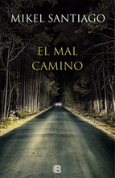
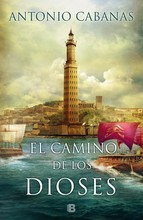
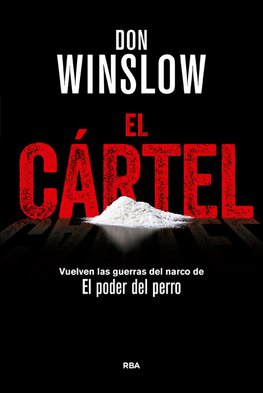

|  | Tras convertirse en un fenómeno internacional con La última noche en Tremore Beach, Mikel Santiago se consagra definitivamente como un maestro de la intriga con su segunda novela, aún más adictiva y llena de suspense que la anterior. En una carretera rural del sur de Francia, un hombre surge de la oscuridad y desencadena una serie de extraños acontecimientos, convirtiendo en una pesadilla las vidas del escritor Bert Amandale y su amigo Chucks Basil, una estrella de rock en horas bajas. Santiago se sirve de un escenario idílico e inquietante, en el corazón de la Provenza, para atraparnos en una historia que se lee compulsivamente y en la que late, de fondo, el destino de unos personajes marcados por sus errores. El Mal camino/Mikel Santiago 20 euros |
|  | La magistral escritura de Antonio Cabanas nos acerca a un momento histórico único: cuando el Antiguo Egipto sucumbe ante el empuje de un nuevo orden dispuesto a devorar a sus dioses milenarios. En medio de esta situación se encuentra Amosis. A través de su vida, el lector recorrerá los años convulsos en los que las tres grandes civilizaciones clásicas, el decadente Egipto, Grecia y la emergente Roma, convierten el Mediterráneo en un fascinante crisol de culturas. Su odisea nos llevará desde el Alto Egipto hasta los lejanos desiertos de Nubia, y desde Alejandría hasta las islas bañadas por el Egeo. Acompañado por personajes extraordinarios como el esclavo Abdú, la fascinante Circe o el librero Teofrasto, tendrá que hacer frente a lo peor y lo mejor del ser humano: la ambición desmedida, el ansia de poder, la traición, la auténtica amistad y la fuerza regeneradora del amor. El Camino de los Dioses/Antonio Cabanas 23 euros |
|  | El cártel es una colosal narración que se mueve entre los áridos escenarios mexicanos y los despachos de los poderosos en Washington, y que se extiende hasta ciudades europeas como Berlín y Barcelona. El absorbente trabajode documentación de Winslow (libros, prensa, fotos, vídeos, encuentros personales...) le ocupó cinco años, y marcó su vida personal por las implicaciones que acarrea adentrarse en un mundo tan increíblemente violento y corrupto. «Elperiodismo te proporciona los datos, pero la ficción te cuenta la verdad», confesó Don Winslow en una entrevista. Aunque El cártel sea ficción, muchos de los asesinatos, torturas y actuaciones policiales que se describen en el librose basan en hechos reales, ocurridos sobre todo entre los años 2000 y 2011. El Cartel/Don Winslow 25 euros |